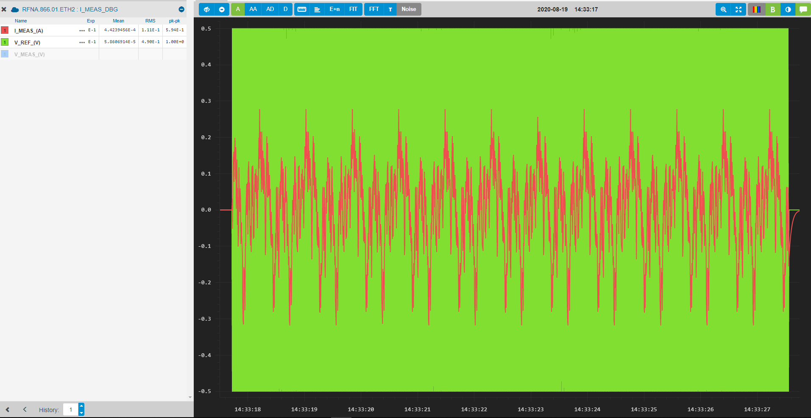

PRBS Example¶
Suppose that it is desired to design a controller for the current loop using data-driven
methods instead of a model. The PRBS method can be used to obtain the frequency response of
the open-loop system for this purpose. For the current loop, we will need the frequency response from
V_REF to I_MEAS. Let us assume that the aquisition has been captured with Powerspy and stored in a dataframe
with the UI parameter values being stored in the object prbs_pars.
>>> device = 'RFNA.866.01.ETH2' >>> vars(prbs_pars) {'reg_mode': 'V', 'ref_mode': 'V_REF_(V)', 'meas_mode': 'I_MEAS_(A)', 'period_iters': 1, 'amplitude_pp': 1.0, 'k_order': 13, 'num_sequences': 12} >>> df_i_time t_global I_MEAS_(A) V_REF_(V) V_MEAS_(V) - t_local sample t_local sample t_local sample 0 1.597840e+09 1.597840e+09 -5.520654e-36 1.597840e+09 0.0 1.597840e+09 0.0 1 1.597840e+09 1.597840e+09 -5.520654e-36 1.597840e+09 0.0 1.597840e+09 0.0 2 1.597840e+09 1.597840e+09 -5.520654e-36 1.597840e+09 0.0 1.597840e+09 0.0 3 1.597840e+09 1.597840e+09 -5.520654e-36 1.597840e+09 0.0 1.597840e+09 0.0 4 1.597840e+09 1.597840e+09 -5.520654e-36 1.597840e+09 0.0 1.597840e+09 0.0 ... ... ... ... ... ... ... ...

Fig. 7 PRBS aquisition with V_REF (green) and I_MEAS (red).¶
With this data, the frequency response can easily be obtained by calling the following functions:
>>> import pyfresco.frm as frm >>> F = frm.Frm_methods(device) >>> df_freq = F.prbs(df_i_time, prbs_pars) >>> df_freq f gain phase 0 1.220852 16.797757 -20.015512 1 2.441704 15.510021 -36.172323 2 3.662556 13.963785 -47.810938 3 4.883409 12.442825 -56.015474 4 6.104261 11.044407 -61.922417 .. ... ... ...